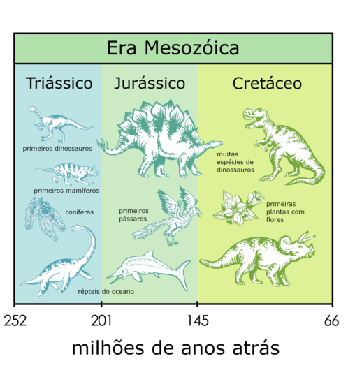
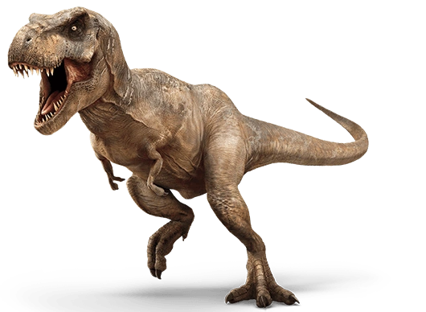
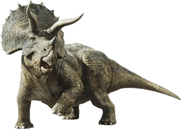
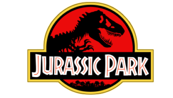
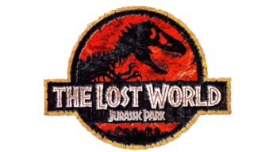
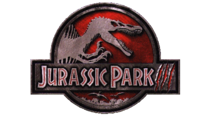

Os dinossauros foram extintos e devem permanecer assim, não crie dinossauros em casa igual John Hammond

A Era Mesozóica também é chamada de Idade dos Dinossauros e durou entre 250 milhões a 65 milhões de anos atrás. É dividida em três períodos: Triássico, Jurássico e Cretáceo.
Tiranossauro rex era um animal de grandes proporções que viveu entre 90 e 66 milhões de anos atrás. Esses animais apresentavam cerca de 12 metros de comprimento e aproximadamente 3,65 metros de altura. A cabeça do tiranossauro rex também surpreende, medindo cerca de 1,5 m. Esse dinossauro apresentava um olfato bem desenvolvido e sua visão pode ser comparada à de aves de rapina. Possuía uma mordida bastante potente, sendo considerada mais forte de que a de qualquer outro animal. Acredita-se que esse animal era capaz de caçar mas também se alimentava de carniça quando era necessário, assim como ocorre com predadores de topo nos dias atuais.
Sobre o T-Rex

O Tricerátops é uma das espécies mais famosas de dinossauro. Com sua maior característica, os três chifres na cabeça, ficou conhecido e identificado no cinema como o inimigo do Tiranossauro Rex. O Tricerátops foi um dinossauro herbívoro que se deslocava sobre as quatro patas e é pertencente à família dos ceratopsídeos. Esta família é caracterizada por seus animais que possuíam grandes chifres na cabeça.
Sobre o Triceratops

